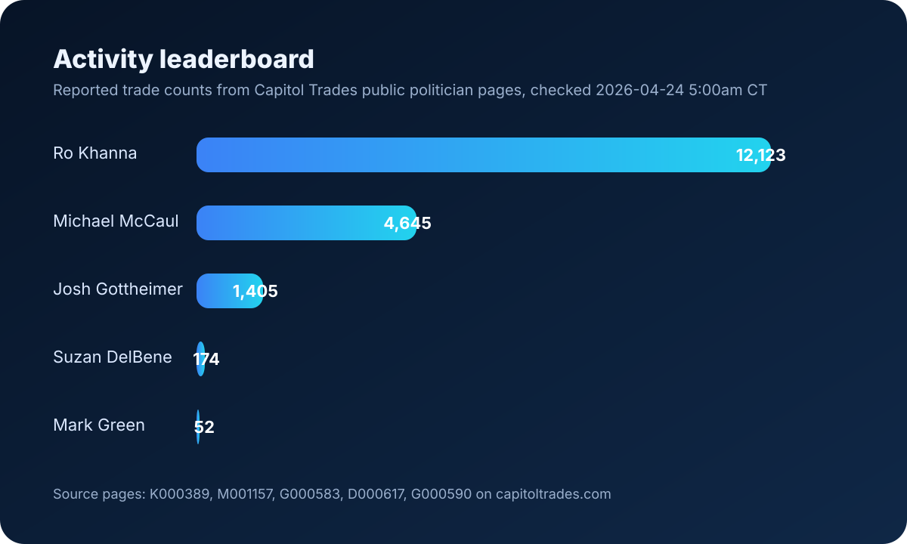

Daily congressional trading brief
Capitol Trades, top 5 active and high-volume traders
Compiled from Capitol Trades public editorial summaries and site search snippets. This is a fast, mobile-friendly dashboard for the daily top five ranking and supporting visuals.
Last checked
2026-04-20
Top activity leader
Ro Khanna
Top volume leader
Michael McCaul
Executive summary
- Ro Khanna appears to lead by trade count and repeated trading activity.
- Michael McCaul remains the strongest disclosed volume leader in public Capitol Trades summaries.
- Suzan DelBene and Josh Gottheimer stand out for fewer but materially larger trades.
- Mark Green remains active, but trails the top tier on both inferred activity and disclosed size.
- This ranking is a best-effort public-web synthesis, not a direct raw-database export.
Mobile link
Open the live dashboard
https://capitoltrades-report.pages.dev/
Top 5 ranking
| Rank | Name | Why included | Activity signal | Volume signal |
|---|---|---|---|---|
| 1 | Michael McCaul | Explicitly identified as the strongest volume leader in Capitol Trades editorial coverage. | 6,632 trades in past 3 years | Hundreds of millions of dollars |
| 2 | Ro Khanna | Most active by count and repeatedly highlighted among the most active traders. | 13,000+ trades in past 3 years | Lower volume than McCaul |
| 3 | Suzan DelBene | Far fewer trades, but notably larger disclosed position sizes. | 187 trades in past 3 years | Single trades up to $5M to $25M |
| 4 | Josh Gottheimer | High-volume pattern with repeated large Microsoft-linked disclosures. | 1,260 trades since 2019 | Most likely exceeds $100M |
| 5 | Mark Green | Frequently cited as active, but below the top tier in this synthesis. | 600+ trades in past 3 years | Meaningful but below top tier here |
Charts
